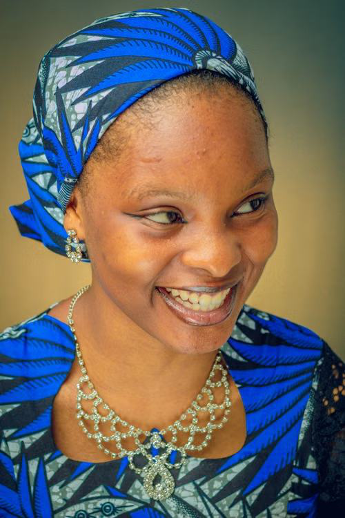
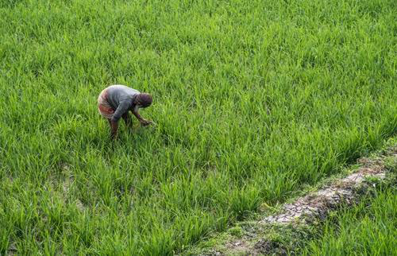

Agriculture & Food Systems
Advance food security, agribusiness, and rural employment.
High-value, youth-led agriculture
High Profitability
Rapid-harvest, fast-turnover crops that generate income quickly.
Skill Building
Comprehensive agricultural mentorship and hands-on training.
Self-Sustainability
Community-driven economic growth that funds itself.
Crop & Livestock Focus
Spices & Vegetables
High-value, short-duration horticulture for local and regional markets.
Small Livestock
Poultry and small ruminants that produce rapid, repeatable returns.
Cattle & Small Ruminants
Larger livestock enterprises for long-term community wealth.

From voices to opportunity
Every sector follows the same path so stories, evidence and action stay connected.
The Challenge
Young farmers face limited land access, finance, storage and reliable routes to market.
African Voices
Farmers, processors and agribusiness innovators share what works in local conditions.
Opportunities and Solutions
Short-duration crops, small livestock, training and buyer links can support practical enterprise pilots.
Projects and Evidence
AYM separates documented pilots from proposals and publishes figures only after verification.
Get Involved
Suggest a farmer story, propose an enterprise pilot or support an approved training activity.
Still have questions?
Can't find the answer you're looking for? Please chat to our friendly team.